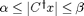
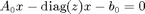
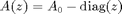
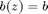
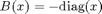
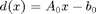

test_prodQ
Test function for prodQ_local and prodQ_global.
Contents
Description
function [opt_prob] = test_prodQ()
Source code
opt_prob = my_create_test_problem(2, 10, 3);
Private function to create a test problem
function [opt_prob] = my_create_test_problem(num_modes, n, p)
for k = 1 : num_modes [fo, pr, sa, sd] = my_create_test_case(n, p); opt_prob(k) = struct( 'field_obj', fo, ... 'phys_res', pr, ... 'solve_A', sa, ... 'solve_A_dagger', sd); end
Private function to create a test case
A field design objective corresponding to

is created, as well as a physics residual of the form

where
- ,
- ,
- , and
- .
Finally, function handles for solving A and its conjugate transpose are also created.
function [field_obj, phys_res, solve_A, solve_A_dagger] = ... my_create_test_case(n, p) % Create the field objective. alpha = abs(randn(p, 1)); field_obj = struct( 'alpha', alpha, ... 'beta', alpha + abs(randn(p, 1)), ... 'C', randn(n, p) + 1i * randn(n, p)); % Create the physics residual. A0 = randn(n) + 1i * randn(n); b0 = randn(n, 1) + 1i * randn(n, 1); phys_res = struct( 'A', @(z) A0 - diag(z), ... 'b', @(z) b0, ... 'B', @(x) -diag(x), ... 'd', @(x) A0 * x - b0); % Function handles for solving A. solve_A = @(z, b) (@() phys_res.A(z) \ b); solve_A_dagger = @(z, b) (@() phys_res.A(z)' \ b);
ans =
1x2 struct array with fields:
field_obj
phys_res
solve_A
solve_A_dagger